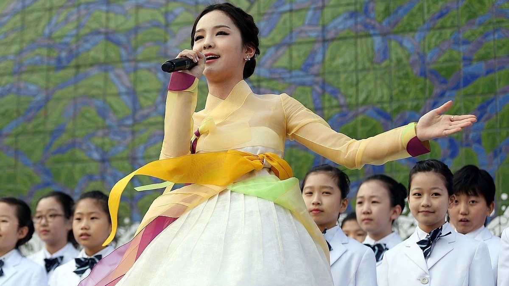
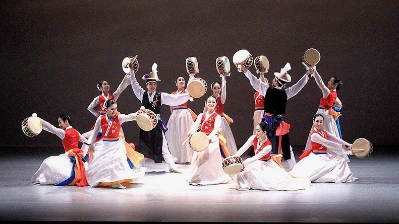

Arirang
Importance of Arirang


In the recent days, Arirang is slowly being forgotten in our lives. Han University
News has mentioned that Arirang is being forgotten due to the modern K-pop songs.
As people are not getting interested in traditional Korean folk songs such as Arirang,
many people just know as “A traditional song that old people listened”.
Arirang is a national symbol for both South and North Korea. Arirang is a symbol of Korea’s past
struggle for the independence from Japan. National Folk Museum of Korea has explained
the Arirang: “Arirang represents all the joys and sorrows in the history and lives of
Koreans. It is deeply rooted in Koreans’ emotion as the cultural DNA.” Koreans have
grown up with the Korean folk song, Arirang, and this song gives nostalgia feelings
about their nations and cultural identity.
©Joseph Park